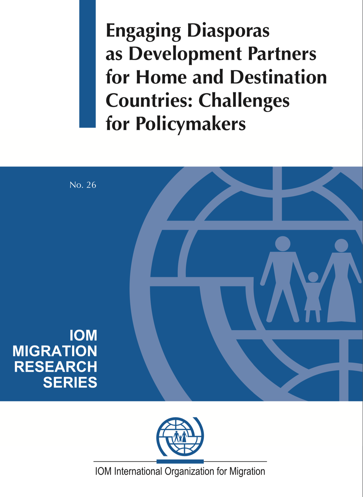
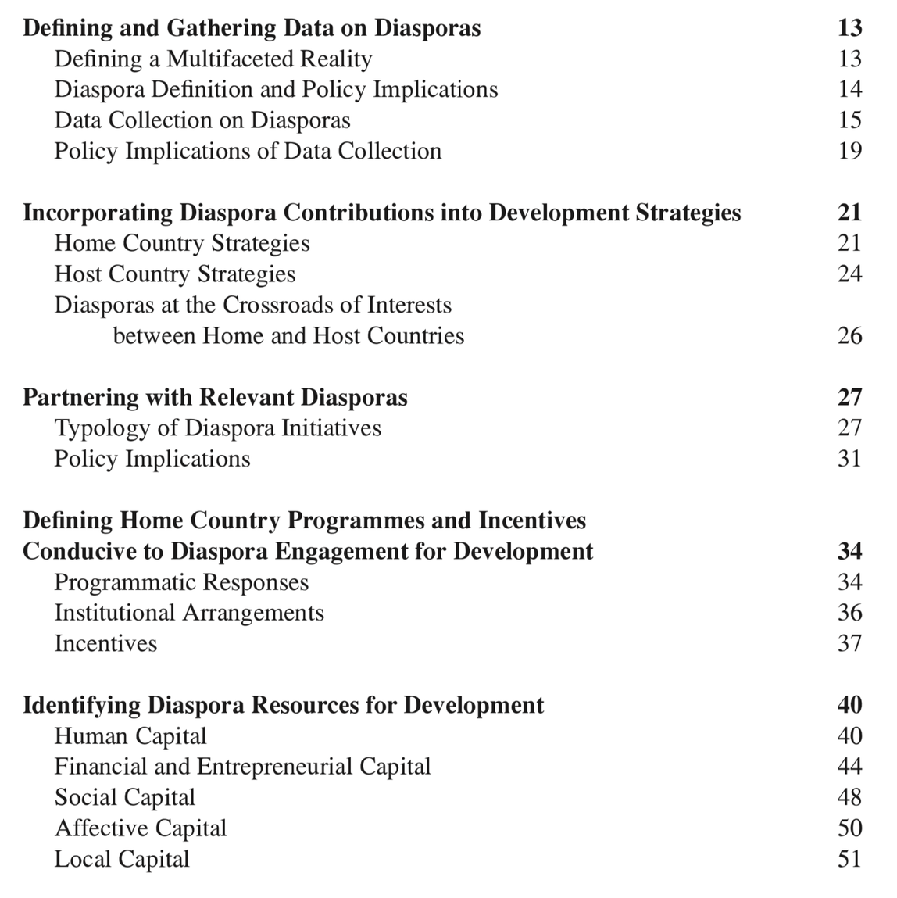

TIDAAAdban1
Title: Engaging Diasporas as Development Partners for Home and Destination Countries
Author:
Download:
Publisher:
International Organization for Migration
17 route des Morillons, 1211 Geneva 19, Switzerland


This paper reviews existing policies aimed at engaging diasporas for development purposes, and discusses the policy context and factors that facilitate their mobilization. It addresses a number of key policy challenges in the light of ongoing national practices, general research evidence, and IOM’s research and operational experience. National policy approaches and a growing number of pilot programs are reviewed, providing a combined analysis of policies and programs. Considering that attention at the national and international level is largely focused on remittances and remittance policies, this paper also examines how policymakers could enhance the non-financial contributions made by diasporas. The material presented in this document aims to inform policymakers home and host countries on existing practices and to provide a guide for those engaged in formulating policies to engage diasporas as active partners for development, in particular in countries of origin.
The paper identifies and discusses some of the key stages for policy development, starting with the definition of diasporas, data gathering on diasporas, and their respective policy implications. The document then examines the development needs and strategies to which diasporas can contribute and the role of diaspora-driven initiatives. Existing programs and incentives in the home countries aiming to favor relations with diasporas are subsequently discussed. Finally, the paper explores a diversity of diaspora resources (human, financial, entrepreneurial, social, affective, and local) and identifies various means to encourage the productive contributions to be made by diasporas.
The paper concludes with a discussion of the policy's role in supporting diasporas and maximizing their contributions for the benefit of migrants, home, and host countries and includes a list of policy recommendations and a roadmap summarizing the key stages of diasporas policymaking.
Diasporas have been making contributions for a long time, without waiting for policy to mobilize them and sometimes even in spite of these. However, diaspora contributions are directly related to institutional frameworks, socio-economic settings, political environments as well as issues of perceptions, images, trust, and social identification, in both the home and host country.
While there is a growing policy interest in tapping, mobilizing, and channeling diaspora contributions, the role of policies should be clearly defined, and the approaches that can effectively facilitate the engagement of diasporas for development understood to ensure that diasporas are not deprived of the ownership of their contributions.